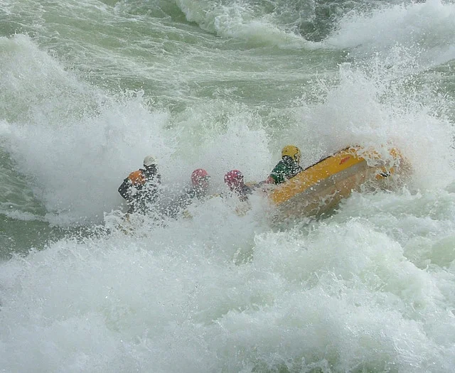

White-water rafting in Jinja feels like agreeing to let the Nile decide the next few hours. The river broadens, tightens, surges, and drops with a confidence that makes every instruction from the guide sound both practical and slightly theatrical. Then the raft tips into the first serious rapid, and theory turns instantly into laughter, shouting, and cold spray.
What makes the experience so memorable is its rhythm. There are bursts of chaos where paddles flash and the river seems to fold upward, followed by calmer stretches where the whole group catches breath and looks around at the beauty of the river corridor. Adventure and scenery keep alternating in a way that never lets the day feel one-dimensional.
Jinja's section of the Nile is world-class not only because the rafting is exciting, but because the surroundings are generous enough to carry the excitement gracefully. You are not just surviving rapids. You are moving through one of East Africa's great river landscapes.
Why The Nile Makes It Different
There is a psychological thrill in rafting a river whose name already feels legendary. The Nile adds narrative weight to the adventure. Even before the first rapid, the river seems to carry history, scale, and a kind of old authority that sharpens every moment on the water.
That larger sense of place is why rafting in Jinja often appeals even to travelers who are not extreme sports enthusiasts by nature.
Adrenaline With Breathing Space
One of the best things about a rafting day here is that it does not feel relentlessly hard-edged. The pauses matter. They let the river become scenic again, let conversation return, and remind everyone that the experience is as much about the Nile itself as about the next surge of white water.
That balance keeps the day enjoyable for a wider range of travelers and helps explain why Jinja's adventure scene has such broad appeal.
Why People Talk About It Long After
Travelers remember specific rapids, of course, but they also remember the atmosphere around them: the team energy, the recovery laughter, the color of the water, the moments of floating between intensity and calm. It becomes one of those experiences where the memory is as social as it is physical.
If you want Uganda to feel thrilling without losing beauty or personality, rafting the Nile is one of the strongest ways to do it.